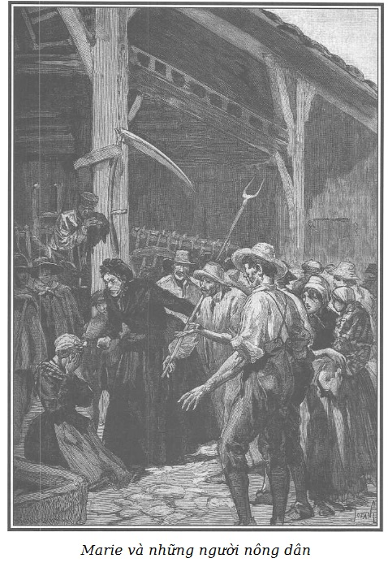

Cảnh mà chúng tôi sắp miêu tả diễn ra trong sân của trang trại, trước mắt những người thợ cày và những người phụ nữ giúp việc vừa đi làm về, đang nghỉ ăn trưa.
Dưới mái nhà kho, người ta thấy một chiếc xe nhỏ do một con lừa kéo chở những đồ dùng xoàng xĩnh, nghèo nàn của chị vợ góa. Một thằng bé mười hai tuổi và hai đứa nhỏ hơn dỡ những đồ đạc trên xe xuống.
Chị bán sữa khoảng bốn mươi tuổi, mặc đồ đen, có bộ mặt khắc khổ, dũng cảm và kiên định. Cặp mắt chị đỏ mọng vì khóc nhiều. Bắt gặp Marie, chị ta kêu lên một tiếng khiếp sợ. Nhưng ngay tức khắc, sự đau đớn, tức giận, sự nổi khùng làm mặt chị ta nhăn nhúm lại. Chị ta nhảy bổ vào Marie, nắm lấy tay cô một cách hung dữ và vừa chỉ vào cô vừa kêu to với những người trong trang trại:
- Đây, con khốn nạn này biết kẻ giết chồng tôi. Tôi thấy nó nhiều lần nói chuyện với tên ăn cướp khi tôi bán sữa ở góc phố Vieille-Draperie, sáng nào nó cũng mua của tôi một xu sữa, nó phải biết thằng khốn nạn nào đã giết người, cũng như những tên khác, cùng bọn ăn cướp với nhau. Này, mày không thể thoát khỏi tay tao, đồ đểu. Chính là mày. - Chị bán sữa tức giận kêu lên túm thêm một tay nữa của Marie lúc đó đang run rẩy cuống cuồng muốn trốn.
Clara hoảng hốt trước sự tấn công bất ngờ, không nói được lời nào. Nhưng khi thấy chị bán sữa làm quá, cô bé kêu lên và nói với chị vợ góa:
- Này, chị điên rồi! Nỗi đau làm chị mất trí! Chị nhầm rồi!
- Tôi nhầm sao?… - Chị nông dân nói với thái độ giễu cợt, chua chát. - Tôi mà nhầm! Ôi, không đâu… Tôi không nhầm đâu. Này, hãy nhìn xem nó tái xanh như thế nào, con khốn nạn… răng nó lập cập… Tòa án sẽ buộc mày phải nói… mày phải đến nhà ông xã trưởng với tao, nghe chưa? Này, mày đừng có hòng cưỡng lại… Tao có bàn tay sắt đấy… Tao sẽ kéo mày đi…
- Chị này thật là láo! - Clara nổi giận. - Ra khỏi đây ngay! Chị dám vu cáo cho bạn tôi, cho chị tôi à?
- Chị của tiểu thư, thưa tiểu thư… Này, chính tiểu thư, tiểu thư mới điên!… - Chị bán sữa trả lời đốp chát. - Chị của tiểu thư, một con gái điếm suốt sáu tháng lê la ở khu Nội Thành…
Nghe những lời đó, những người thợ cày bàn tán xôn xao chống lại Marie. Họ đứng về phía chị bán sữa, người cùng giai cấp với họ mà những nỗi đau khổ của chị ta làm họ quan tâm.
Ba đứa con nghe mẹ nó rống lên, chạy đến bên mẹ vừa khóc vừa quấn lấy mẹ, không hiểu chuyện gì xảy ra. Dáng điệu của bọn trẻ khốn khổ mang khăn tang đó làm tăng thêm lòng căm giận của chị vợ góa và sự phẫn nộ của những người nông dân chống lại Marie.
Clara khiếp sợ trước sự biểu lộ gần như đe dọa đó, bèn nói với những người trong trang trại bằng một giọng cảm động:
- Hãy đưa chị ta ra khỏi đây. Tôi nhắc lại là sự đau khổ đã làm cho chị ta nhầm lẫn. Marie, Marie, xin lỗi chị! Lạy Chúa! Chị điên ấy đâu có hiểu những lời chị ta nói!
Sơn Ca thất sắc, cúi đầu tránh cái nhìn của những người xung quanh, đứng bất động, thất thần, câm lặng và không làm một cử chỉ nào để thoát khỏi bàn tay rắn chắc của chị bán sữa khỏe mạnh.
Clara hoảng sợ trước quang cảnh có thể gây nguy hiểm cho bạn, cô nói với những người thợ cày:
- Các người không nghe tôi sao? Tôi ra lệnh cho các người đuổi chị này ra bởi thái độ ngoan cố của chị ta. Để phạt chị ta về sự vô lễ, chị ta không được nhận vào làm trong trang trại như mẹ tôi đã hứa và chị ta suốt đời không được đặt chân tới nơi này.
Không một người nông dân nào muốn nhúc nhích tuân lệnh của Clara. Một vài người cả gan nói:
- Chết chửa, thưa tiểu thư, nếu cô ta là một cô gái điếm, lại biết kẻ giết chồng chị khốn khổ này thì cô ta phải đến trình bày với ông xã trưởng chứ…
- Tôi nhắc lại là chị ta sẽ không bao giờ vào làm trong trang trại này, ít ra là cho đến khi nào chị ta xin lỗi chị Marie về hành động thô bạo của mình.
- Tiểu thư đuổi tôi… Được, tốt lắm! - Chị bán sữa nói một cách cay đắng. - Đi, các con mồ côi của mẹ, - vừa nói chị vừa ôm mấy đứa con, khuân đồ đạc lên xe - chúng ta đi kiếm sống nơi khác, Đức Chúa nhân từ sẽ thương chúng ta. Nhưng ít ra chúng ta cũng phải lôi theo đứa con gái khốn nạn này đến ông xã trưởng, ông ấy sẽ buộc nó phải tố giác kẻ giết chồng tôi… vì nó biết bọn ấy!… Vì tiểu thư giàu có, thưa tiểu thư, - vừa nói chị ta vừa nhìn Clara một cách khinh bỉ - bởi vì tiểu thư có những người bạn như thế… không nên vì thế mà… đối xử thô lỗ với những người nghèo khổ.
- Đúng đấy, - một người nông dân nói - chị bán sữa nói có lý!
- Người phụ nữ tội nghiệp!
- Người ta đã giết chồng chị ta… Chị ta đành phải cam chịu như thế à?
- Không thể cấm chị ta làm những việc mà chị ta có thể làm để phát hiện ra kẻ đã giết chồng mình.
- Đuổi chị ta là bất công!
- Có phải lỗi của chị ta đâu, nếu bạn của cô Clara là một gái điếm.
- Không thể đuổi một người mẹ thật thà, một người mẹ của một gia đình vì đứa con gái khốn nạn đó.
Và những lời cằn nhằn trở nên đe dọa, lúc đó Clara kêu lên:
- Ơn trời, mẹ tôi đây…
Thật vậy, bà Dubreuil từ phía vườn cây đi qua sân.
- Này Clara, Marie… - Vừa nói bà vừa đi về phía đám đông, - Về ăn cơm! Về đi các con, muộn rồi!
- Mẹ, - Clara nói - mẹ hãy bảo vệ chị con trước những lời nguyền rủa của chị này. - Và cô chỉ vào chị bán sữa. - Mẹ hãy đuổi chị ta ra khỏi đây. Nếu mẹ nghe được tất cả những lời vô lễ mà chị ta đã nói với Marie…
- Thế nào? Chị ta dám?…
- Thưa mẹ, vâng… Mẹ xem đấy, chị Marie run sợ đến thế nào. Chị ấy không còn đứng vững nữa… Ôi! Chuyện như thế này xảy ra ở nhà ta thì thật là xấu hổ. Marie, hãy tha lỗi cho em, em van chị.
- Nhưng như thế nghĩa là thế nào? - Bà Dubreuil vừa nói vừa nhìn xung quanh với vẻ buồn rầu, sau khi thấy thái độ run sợ của Marie.
- Bà sẽ rất công bằng… bà ấy… đúng thế… - Những người nông dân nói.
- Bà Dubreuil đấy! Chính mày sẽ bị đuổi ra khỏi cửa… - Chị bán sữa nói với Marie.
- Thật thế sao? - Bà Dubreuil nói với chị bán sữa. Chị ta vẫn nắm chặt tay Marie. - Chị dám nói như vậy với bạn của Clara à? Có phải như thế là chị trả ơn cho tôi chăng? Chị có thể để cho cô gái trẻ đó được yên không?
- Cháu rất quý trọng bà, thưa bà. Và cháu rất biết ơn lòng tốt của bà. - Chị bán sữa vừa nói vừa thả tay Marie ra. - Nhưng trước khi bà đuổi mẹ con cháu, bà hãy hỏi đứa con gái khốn nạn này. Chắc là nó sẽ không dám chối là cháu biết nó và nó cũng biết cháu.
- Lạy Chúa! Marie, con có nghe chị ta nói gì không? - Bà Dubreuil ngạc nhiên hỏi.
- Mày tên là Sơn Ca, có phải hay không? - Chị bán sữa hỏi Marie.
- Đúng. - Cô gái khốn khổ nói với thái độ sợ sệt, mắt không dám nhìn bà Dubreuil. - Vâng, trước đây người ta gọi tôi như thế.
- Đấy, bà thấy không! - Mấy người nông dân kêu lên tức giận. - Nó đã thú nhận! Nó đã thú nhận tất cả!
- Cô ấy thú nhận, nhưng thú nhận gì? Thú nhận cái gì? - Bà Dubreuil hoảng hốt nói - Cô ấy đã ở với bọn giết người à?
- Những người như nó thì chỉ biết những chuyện đó… - Chị góa chồng nói.
Lúc đầu bà Dubreuil vô cùng ngạc nhiên trước sự việc. Nhưng sau khi Marie thú nhận, bà Dubreuil nhận ra sự việc, bà lùi lại với thái độ khó chịu và hoảng sợ. Bà giật mạnh tay Clara khỏi tay Marie và kêu lên:
- Ôi, nhục nhã biết bao! Clara, phải cẩn thận. Đừng đến gần con bé khốn nạn đó… Nhưng tại sao bà Georges lại đón nó về ở với bà ấy? Tại sao bà ấy lại dám giới thiệu nó với chúng ta… làm cho con gái ta phải chịu đựng… Lạy Chúa! Lạy Chúa! Thật đáng sợ! Thật là không thể ngờ được! Nhưng không, không, bà Georges sẽ không chịu nổi sự nhục nhã đó. Có thể bà ấy cũng bị lừa như chúng ta. Nếu không phải thế… Ôi! Sẽ là sự bêu riếu cho bà ấy!
Clara vô cùng đau khổ và sợ hãi trước cảnh đó, tưởng như trong mơ. Sống trong sự trong sạch ngây thơ, cô không thể hiểu được sự tố cáo khủng khiếp mà người ta đổ cho bạn mình. Trái tim cô như vỡ ra, nước mắt chứa chan khi thấy Marie im lặng, run sợ như một bị cáo đứng trước quan tòa.
- Lại đây, lại đây, con của mẹ, Clara. - Rồi bà Dubreuil quay về phía Marie, nói. - Còn mày, không xứng đáng làm người, Chúa sẽ trừng phạt sự giả nhân giả nghĩa bỉ ổi của mày, lại dám làm cho con gái ta phải… một thiên thần của đức hạnh đấy… phải gọi mày bằng chị, bằng bạn thân… bạn thân… chị… Mày, đồ cặn bã của những gì xấu xa nhất trên đời! Đúng, xấu hổ làm sao! Mày lại dám trà trộn vào những người tốt trong khi lẽ ra mày phải xứng đáng ngồi tù cùng với đồng bọn.
- Đúng, đúng đấy, - những người nông dân kêu to - phải cho nó vào tù, nó biết kẻ giết người.
- Có thể nó là kẻ đồng mưu!
- Thấy không! Trời có mắt. - Chị góa chồng vừa nói vừa giơ quả đấm ra với Marie.
- Còn về chị, chị bán sữa dũng cảm, chị sẽ ở lại đây làm việc. Tôi cảm ơn chị về việc chị đã lột mặt được đứa khốn nạn này.
- Hay quá! Bà chủ của chúng ta rất công bằng, bà… - Những người nông dân thì thào.
- Lại đây, Clara, - bà Dubreuil nói - bà Georges sẽ nói với chúng ta về tư cách của nó, nếu không, ta sẽ không giao thiệp với bà ấy nữa vì nếu bà ấy không bị đánh lừa thì bà ấy đã cư xử với chúng ta thật tồi tệ.
- Nhưng, thưa mẹ, hãy nhìn chị Marie đáng thương thế kia!
- Dù nó có chết vì xấu hổ thì cũng mặc nó. Nó là một trong số những con người mà một người con gái như con không thể nói đến mà không xấu hổ.
- Lạy Chúa, lạy Chúa, thưa mẹ, - Clara cưỡng lại không để mẹ mình lôi mình đi - con không hiểu thế là thế nào?… Chị Marie có thể là thủ phạm như mẹ đã nói không? Nhưng mẹ hãy nhìn xem, chị ấy yếu ớt, hãy thương chị ấy một chút.
- Ôi, tiểu thư Clara, cô rất tốt, hãy tha lỗi cho tôi, thật là bất đắc dĩ, hãy tin tôi, tôi đã lừa dối cô, tôi thường tự trách mình. - Marie vừa nói vừa nhìn người bảo vệ mình bằng ánh mắt biết ơn không thể tả được.
- Nhưng, mẹ của con, sao mẹ sắt đá thế? - Clara đau đớn kêu lên.
- Thương hại nó à? Thôi nào! Nếu bà Georges không giải thích rõ chuyện này, mẹ sẽ tống cổ con khốn nạn này ra khỏi trang trại như một kẻ bị bệnh dịch hạch. - Bà Dubreuil nghiêm khắc nói và lôi thốc Clara theo trong lúc cô vẫn quay lại lần cuối về phía Marie và nói:
- Chị Marie, chị của em, em không biết họ kết tội chị về chuyện gì, nhưng em chắc chắn chị không phải là thủ phạm, em vẫn luôn yêu quý chị.
- Im ngay, im ngay! - Bà Dubreuil vừa nói vừa lấy tay bịt mồm con gái. - Im ngay! May mà mọi người đều chứng kiến là sau sự phát hiện ghê gớm này, con không còn ở bên con bé đó thêm một phút nào nữa. Có phải thế không các bạn?
- Vâng ạ, vâng ạ, thưa bà, - những người nông dân nói - chúng tôi làm chứng là tiểu thư Clara không ở lại một phút nào với đứa con gái này. Chắc chắn nó là một con ăn cắp bởi vì nó quen biết lũ giết người.
Bà Dubreuil kéo Clara theo.
Marie ở lại một mình với đám người đang đe dọa, vây quanh lấy cô.
Mặc dù những lời chửi mắng của bà Dubreuil, sự có mặt của bà và của Clara có phần nào làm cô vững dạ hơn. Nhưng khi hai người đó đi rồi, còn lại một mình, bị phó mặc cho đám nông dân, cô thấy mất hết sức mạnh, cô phải dựa vào cái bao lớn của chiếc bơm lấy nước cho ngựa ở sân trại.
Không có gì đáng sợ hơn những lời nói và thái độ của những người nông dân vây quanh cô lúc đó.
Nửa ngồi nửa đứng dựa vào miệng giếng bằng đá xây, đầu gục xuống, hai tay ôm lấy mặt, cổ và ngực che bằng khăn vải Ấn Độ đỏ quàng quanh chiếc mũ tròn nhỏ, Marie ngồi như một pho tượng, đau khổ và nhẫn nhục không thể tả xiết.
Cách đó vài bước chân, chị vợ góa được thể và càng căm giận Marie bởi những lời nguyền rủa của bà Dubreuil, đã chỉ mặt Marie cho các con và những người nông dân bằng những cử chỉ đầy hận thù và khinh bỉ.
Những người nông dân trong trang trại đứng tập trung thành vòng tròn, vẫn không giấu được thái độ giận dữ. Những bộ mặt gườm gườm, thô lỗ, thể hiện lòng căm ghét, cơn giận dữ ngạo mạn và tàn bạo của họ. Cánh phụ nữ lại càng tỏ ra dữ tợn hơn, thịnh nộ hơn. Sắc đẹp não lòng của Marie không phải là nguyên cớ nhỏ nhất trong nhiều duyên do làm cho họ lăn xả vào cô đâu!
Tất cả bọn họ, kể cả đàn ông, đàn bà đều không thể tha thứ cho Marie vì cô lâu nay ngang hàng với những người chủ của họ.
Lại nữa, một số nông dân ở Arnouville chưa đủ điều kiện để được nhận vào trang trại Bouqueval, một nơi làm việc mà ai cũng thèm muốn trong vùng. Những người đó, vốn ngấm ngầm không ưa bà Georges, cũng muốn để cho Marie phải biết thân biết phận.
Những hành động đầu tiên của những con người thô lậu đều luôn quá khích.
Hoặc rất tốt hoặc rất tồi.
Nhưng họ trở nên nguy hiểm, đáng sợ hơn khi đa số tin rằng họ được phép tàn nhẫn là do những tội lỗi thực sự hoặc tưởng là có tội của người mà họ đang căm giận, thù ghét gây nên.
Mặc dù phần lớn những người nông dân trong trang trại này có thể không có quyền gì để mà động lòng kịch liệt đối với Marie nhưng họ vẫn cảm thấy hình như bị xấu lây vì sự có mặt của cô. Ý thức về sự liêm sỉ làm họ phẫn nộ và nghĩ rằng con người bất hạnh đó thuộc về giai cấp nào mà lại thú nhận đã từng chuyện trò với bọn giết người. Chẳng cần gì hơn nữa để kích động lòng giận dữ của họ, huống chi thái độ của bà Dubreuil càng khuyến khích họ thêm.
Một người trong bọn họ nói:
- Cần phải đưa nó lên ông xã trưởng!
- Đúng, đúng, nếu nó không chịu đi thì lôi nó đi.
- Thế mà nó dám ăn mặc như những con gái nhà lành ở nông thôn chúng ta. - Một chị nông dân xấu như ma lem nói.
- Với cái vẻ thơ ngây như thế, người ta dễ cho là nó trong trắng lắm đấy.
- Dám cả gan đi chầu lễ không nhỉ?
- Cái đồ trâng tráo… Sao nó không nói ngay đi?
- Chỉ còn thiếu đi lại giao thiệp với các ông chủ nữa!
- Cứ như chúng ta là người ăn đứa ở với nó.
- May thay! Đến lượt ai nấy chịu.
- Này, mày phải nói và tố giác kẻ giết người! - Chị góa kêu lên. - Chúng mày cùng bọn với nhau cả… Tao tin là hôm đó mày cũng có mặt cùng bọn chúng… Đi, đi. Không có chuyện khóc lóc, lúc này mày đã bị phát giác. Giơ mặt ra cho chúng tao xem, đẹp mặt nhỉ!
Và chị ta thô bạo kéo hai tay cô gái đang che khuôn mặt đầm đìa nước mắt.
Marie lúc đầu xấu hổ gần chết, sau đó thì bắt đầu lo sợ thấy mình bị phó mặc cho những người nông dân đang giận dữ này. Cô chắp hai bàn tay, quay về phía chị bán sữa, đôi mắt van lơn và sợ sệt, cô nói bằng một giọng nhẹ nhàng:
- Lạy Chúa, thưa chị, đã hai tháng nay tôi về trang trại Bouqueval… Tôi không thể chứng kiến nỗi đau khổ mà chị nói, và…
Tiếng nói nhỏ nhẹ của Marie bị che lấp bởi những tiếng kêu giận dữ.
- Dẫn nó đến nhà ông xã trưởng… nó sẽ tự giải thích.
- Đi nào! Bước, “người đẹp”!
Và đám người dọa nạt tiến đến mỗi lúc một gần Marie. Cô bất giác khoanh tay lại, nhìn hết bên này đến bên kia, hoảng sợ và dường như muốn kêu cứu.
- A! Mày muốn tìm ai đấy? - Chị bán sữa nói. - Có tìm quanh đây cũng vô ích, cô Clara không ở đây để bảo vệ mày đâu, mày không thoát khỏi tay chúng tao đâu!
- Than ôi! Thưa chị, - Marie run rẩy nói - nào tôi có định trốn đâu! Tôi không cần gì hơn là trả lời những gì mọi người muốn hỏi tôi, bởi vì chuyện đó có thể có ích… Nhưng tôi đã làm điều gì không tốt để mọi người vây quanh và đe dọa tôi…?
- Mày đã làm cái chuyện là dám đứng ngang hàng với chủ chúng tao, trong khi, chúng tao xứng đáng gấp ngàn lần mày mà không được đấy. Đó là điều mày đã làm cho chúng tao đấy!
- Và nữa, tại sao mày lại muốn đuổi mẹ con chị góa này ra khỏi đây? - Một người khác nói.
- Không phải tôi! Đấy là Clara muốn chứ!
- Hãy để chúng tao yên! - Một người nông dân ngắt lời Marie.
- Mày không hề muốn xin cho chị ta, mày hài lòng muốn thấy chị ta mất bữa cơm.
- Không, không, nó không hề xin…
- Nó tồi thật!
- Một người góa chồng khốn khổ… với ba đứa con!
- Nếu tôi không kêu xin là bởi vì tôi không còn đủ sức để nói một lời nào… - Marie trả lời.
- Mày thừa sức để nói với bọn giết người kia mà!
Cũng như chuyện thường xảy ra khi dân chúng xúc động, những người nông dân ấy, khờ khạo hơn là độc ác, bị kích động, tức tối, mất cả tỉnh táo bởi những lời lẽ của chính họ và càng sôi nổi hơn vì chính những lời nguyền rủa và đe dọa mà họ trút vào nạn nhân của mình.
Cũng như vậy, đôi khi do một sự kích thích mạnh mẽ, họ có những hành động bất công nhất, hung dữ nhất, mà họ không biết.
Vòng người tá điền mỗi lúc một siết gần cô gái. Tất cả bọn họ vừa nói vừa xỉa xói. Chị vợ góa thì không còn tự chủ được nữa.
Marie chỉ ngồi cách cái máng nước cho ngựa uống một bao lơn nhỏ, cô lo sợ sẽ bị xô xuống đấy nên vội giơ hai tay van xin về phía họ:
- Lạy Chúa! Các ông, các bà muốn làm gì tôi? Hãy rủ lòng thương, đừng làm khổ tôi.
Từ lúc nãy đến giờ, chị vắt sữa luôn khua chân khua tay, mỗi lúc một đến gần, giơ cả hai nắm tay sát mặt Marie làm cô phải kêu lên, ngả mình về phía sau một cách sợ hãi:
- Tôi lạy chị, đừng tiến lên nữa, chị sẽ làm tôi lăn xuống giếng mất.
Những lời nói đó gợi lên trong những người nông dân thô bạo ấy một ý nghĩ tàn bạo. Nghĩ đến chuyện đùa nhả của dân quê cho vui mà lại làm cho người khác sợ gần chết, một trong bọn người điên rồ đó la to:
- Xô đi! Xô nó xuống…
- Đúng, đúng… Xô xuống… Xô xuống nước! - Họ hô đi hô lại cùng những tràng cười ha ha và những tràng vỗ tay cuồng nhiệt.
- Đúng đấy… Một cái đẩy ra trò! Nó sẽ không chết đâu.
- Điều đó sẽ dạy cho nó đến mà trà trộn với những người lương thiện!
- Đúng… đúng… Đẩy nó xuống nước… Đẩy đi!
- Đúng, sáng nay người ta vừa đập vỡ lớp băng trên mặt giếng.
- Con đĩ ấy sẽ nhớ đời những người tử tế ở trang trại Arnouville.
Nghe những tiếng kêu la vô nhân đạo, những tiếng chế nhạo man rợ đó, nhìn thấy sự phẫn nộ trên các bộ mặt giận dữ một cách đần độn đang tiến đến gần để hất mình xuống nước, Marie tin là mình sẽ chết.

.Sau cảm giác sợ hãi ban đầu, tiếp đó là một sự cam tâm cay đắng, lờ mờ thấy tương lai vô cùng đen tối. Cô thầm cảm ơn Chúa đã rút ngắn nỗi đau khổ cho mình, cô không nói thêm một lời van xin nào nữa, quỳ xuống im lặng, khoanh tay một cách kính cẩn trước ngực, mắt nhắm, vừa cầu kinh vừa chờ đợi.
Những người thợ cày ngạc nhiên trước thái độ cam chịu của Marie, do dự trong việc thực hiện ý định dã man của họ. Nhưng bị cánh phụ nữ nhiếc móc là yếu đuối, họ lại tiếp tục la hét để có thêm can đảm thực hiện những ý đồ độc ác.
Hai trong những người dữ tợn nhất tiến lại túm lấy Marie. Vừa lúc đó, một giọng nói xúc động rung cảm nói với họ:
- Hãy dừng tay!
Cùng lúc ấy, bà Georges lách qua đám đông, đến gần Marie vẫn đang quỳ, nắm lấy tay cô nâng dậy và nói:
- Đứng lên, con của mẹ… đứng lên, con yêu của mẹ! Người ta chỉ quỳ trước Chúa.
Lời nói và cử chỉ của bà Georges uy nghi đến nỗi làm cả đám đông lùi lại và câm lặng.
Sự tức giận làm hai má bình thường xanh xao của bà Georges đỏ ửng. Bà ném một cái nhìn nghiêm nghị và cao giọng nói với đám dân cày một cách đe dọa:
- Khốn khổ chưa kìa! Các ngươi không biết xấu hổ khi hành động thô bạo như thế với cô gái đáng thương này sao?
- Đó là một…
- Đó là con tôi. - Bà Georges ngắt lời một trong những người nông dân. - Cha xứ Laporte, mà mọi người tôn kính, ca ngợi, rất yêu mến và bảo vệ nó. Những ai đã được cha quý mến phải được mọi người kính nể.
Những lời nói đơn giản ấy làm cho những người nông dân bị khuất phục. Cha xứ Bouqueval được địa phương này coi là thánh. Nhiều người chưa quên sự quan tâm của ngài đối với Marie, tuy nhiên vài người trong họ còn thì thào to nhỏ. Bà Georges hiểu ngay và nói:
- Nếu cô gái đáng thương đó là con người hèn hạ nhất, là con người đáng bị mọi người ruồng bỏ thì cũng không phải vì thế mà cách đối xử thô bạo của các người đối với cô ấy kém phần bỉ ổi! Vì sao các người lại muốn trừng phạt cô ấy? Và luật pháp nào cho phép? Các người có quyền gì? Sức mạnh chăng? Hèn nhát thật, đáng xấu hổ cho bọn đàn ông lại đi áp bức một cô gái không có gì tự vệ! Marie, lại đây con, lại đây, con yêu quý của mẹ, hãy trở về nhà chúng ta, ở đó ít ra con còn được mọi người hiểu và yêu mến…
Bà Georges nắm tay Marie, những người nông dân ngượng ngùng nhận ra sự thô bạo của mình, kính cẩn tránh ra.
Chỉ riêng chị vợ góa tiến đến và kiên quyết nói với bà Georges:
- Đứa con gái ấy sẽ không ra khỏi đây nếu nó chưa trình bày với ông xã trưởng về việc chồng tôi bị giết.
- Chị bạn thân mến, - bà Georges nói một cách tự kiềm chế - con gái tôi không có gì phải khai báo ở đây cả. Sau này, nếu thấy cần con bé đến làm chứng thì con bé sẽ được mời và tôi sẽ cùng đi với con bé… Cho đến lúc ấy, không ai có quyền được thẩm vấn con bé.
- Nhưng thưa bà… Tôi nói với bà…
Bà Georges ngắt lời chị bán sữa và nghiêm khắc nói:
- Nỗi đau khổ mà chị phải chịu đựng hầu như không có thể biện giải cho cách ứng xử của chị. Một ngày kia, chị sẽ phải ân hận về những hành động thô bạo mà chị đã khinh suất gây nên. Marie sống với tôi ở trong trang trại Bouqueval. Hãy báo cho quan tòa biết khi ông ấy tiếp nhận lời khai đầu tiên của chị, chúng tôi chờ lệnh của tòa án!
Chị vợ góa không biết trả lời thế nào trước những lời nói khôn khéo đó. Chị ta ngồi xuống lan can giếng nước và khóc thê thảm, vừa khóc vừa ôm các con.
Sau đó vài phút, Pierre đánh xe ngựa đến chở bà Georges và Marie lên xe trở về Bouqueval.
Khi đi qua nhà bà quản lý trang trại Arnouville, Marie nhìn thấy Clara. Cô đang khóc, nấp sau cánh cửa chớp hé mở, vẫy khăn mùi soa tạm biệt Marie.